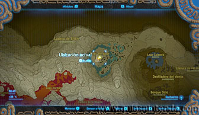
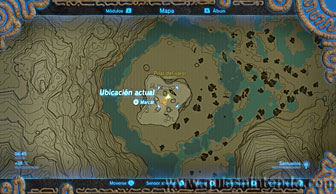
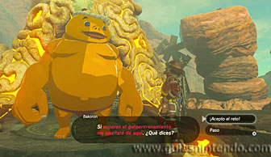
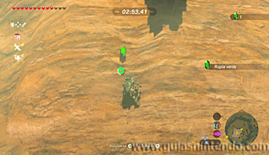
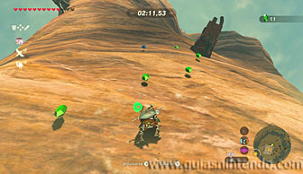
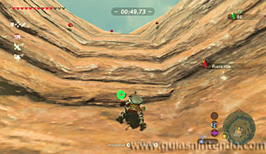
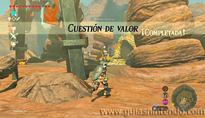
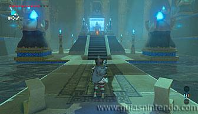
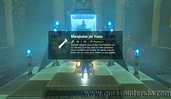

Puedes entrar en este santuario desde que llegas a la región de la torre de Eldin, aunque debes superar la Prueba heroica "Cuestión de valor" para que la entrada se desbloquee. El santuario lo encuentras en la cima del Pilar del valor, al norte de la Montaña de la Muerte.

Al llegar allí encontrarás a Bakoron, el cual te impedirá entrar en el santuario a menos que completes una prueba para demostrar tu valor. Dicha prueba consiste en subir el pilar desde su base antes de que termine el tiempo. Además, tendrás que recoger rupias por valor de 100 o superior. Para participar tienes que entregar 20 rupias, entonces comenzarás abajo y tendrás que empezar la escalada.

Al principio solo verás rupias verdes (que te suman solo una rupia), así que no te preocupes por coger todas las que veas, es más importante ir subiendo lo más rápido posible. Debes tener mucho cuidado de no quedarte sin energía, ya que caer y recuperarte te hará perder mucho tiempo. Según vayas subiendo verás unas plataformas de madera donde te puedes parar. No solo te sirven de descanso, sino que contienen también rupias, así que no dejes de parar en ellas. Cerca del final encontrarás varias rupias rojas, estas son las que más te interesan, ya que cada una sola te suma 20 rupias. Sin embargo, no podrás cogerlas todas si no llegas con suficiente tiempo de sobra.

Si consigues llegar arriba a tiempo y tienes más de 100 rupias al hacerlo completarás la Prueba heroica y Bakoron se apartará para que puedas entrar en el santuario.

Dentro solo verás un cofre y el altar. Dentro del cofre puedes coger un mandoble de hielo. Cuando llegues al altar podrás examinarlo para obtener un símbolo de valía.
